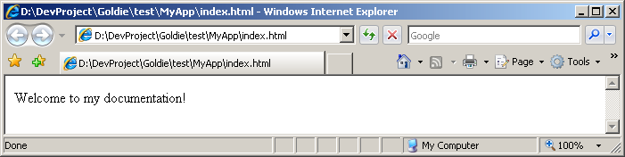
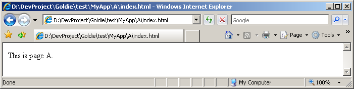
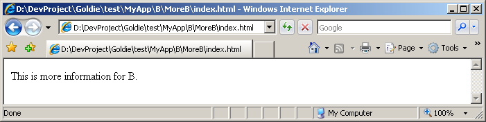

|
Parsing System (v0.9)
|
Template Format
NOTE: GenDocs might become deprecated in a future version of Goldie
in favor of Ddoc.
The templates used by GenDocs are the desired HTML output files, but with some additional markup. Goldie's own documentation templates (in {goldie root}/docssrc) should serve as a good example. Pay special attention to the files docs.tmpl (which serves as the "main" file and defines all the pages in the documentation) and HTMLPage.tmpl (which provides the common HTML "frame" that gets used on every page). UsageThe basic usage of GenDocs involves creating a single "main" template file (such as docs.tmpl). This main template file contains the content of the documentation's main entry page. It also defines all of the main page's sub-pages which, in turn, define their own content and sub-pages, and so on. Any of these pages can be defined all in one large template file, or divided up however you wish across multiple template files. (Standard Goldie convention is to define the entire sitemap in the main template, and give each page its own file named {full name of page}.tmpl.) Each page may also specify a "frame" file (such as HTMLPage.tmpl) which contains all of the HTML header/footer boilerplate. The main template file is passed to GenDocs which automatically loads all referenced templates, processes them, and creates the HTML documentation as a directory tree. This directory tree has one directory and index.html file for each page (the name of this HTML file can be changed as a command-line parameter). The name of the directory is the same as the name of the page. The name of the page is set in the template; it is not assumed to be the template's filename. ExampleConsider the following template file. The main page is named "MyApp". It contains three sub-pages, "A", "B", and "C". Sub-page "B" has its own sub-page "MoreB". [$name|MyApp$]
[$title|My App's Documentation$]
<p>Welcome to my documentation!</p>
[$page|
[$name|A$]
[$title|Page A$]
<p>This is page A.</p>
$]
[$page|
[$name|B$]
[$title|Page B$]
<p>This is page B.</p>
[$page|
[$name|MoreB$]
[$title|More Page B$]
<p>This is more information for B.</p>
$]
$]
[$page|
[$name|C$]
[$title|Page C$]
<p>This is page C.</p>
$]
From that template, GenDocs will create the following directory tree: MyApp/
|-- index.html
|
|-- A/
| |-- index.html
|
|-- B/
| |-- index.html
| |
| |-- MoreB/
| |-- index.html
|
|-- C/
|-- index.html
And the pages will look like this:   SyntaxAll the GenDocs markup falls into one of two categories: tags and quotes. These are explained below. See the file {goldie root}/lang/tmpl.grm for a formal definition of the syntax. TagsTags can either insert data, format data, or provide GenDocs with information. Some examples of tags:
The basic format is:
[$ tag_name $] The tag name, parameters and data are all separated by the pipe character. Leading and trailing whitespace is trimmed from the tag name, parameters and data. The data of a tag can contain quotes. Tags do not nest (except for [$page|...$]). Yes, this is limiting and complicates certain aspects of GenDocs templating, but fixing this would be a non-trivial change. However, this feature may be added in a later version (patches are welcome!). QuotesQuotes insert text literally. Normally, any unquoted text gets inserted into the output automatically, but quotes are needed to escape pipe characters and square brackets. They can also be used to prevent whitespace surrounding tag data from getting trimmed. Outputting pipes and brackets: [:Hello! A | is a pipe. In D, int[] is an array.:]
Preventing whitespace-trimming: [$link|http://www.semitwist.com/goldie|[: Goldie Homepage :]$]
Quotes do not nest. The first instance of :] ends the quote. Quotes do not have any escape sequences. Any tags inside a quote do not get processed and simply get output literally. A Note About AnchorsThere are a few tags that generate or reference HTML anchors. Any time GenDocs does this, it "sanitizes" the anchor name by converting certain invalid characters (specifically: space, parentheses, square brackets, and exclamation point) to underscores. Defined TagsThese are the tags that GenDocs recognizes: NOTE: Some of these tags generate references to CSS classes. It's up to the person writing the templates to include CSS code that defines these CSS classes. [$rem| {comment} $]
A comment. GenDocs just simply removes these. The term "rem" is borrowed from BASIC and DOS BATCH and is short for "remark". [$name| {pageName} $]
Sets the name of the current page. The page will be created in a directory of this name. This should be something like MyPageName. Every page should set this. [$name$]
Displays this page's name, which was set by [$name|...$].
[$fullName$]
Displays the full name of this page. Example: If the main root page is named "Foo", and it has a sub-page named "Bar", then the full name of page "Bar" is "Foo.Bar". [$title| {pageTitle} $]
Sets the title of the current page. This will be displayed to the user, and can be anything, such as My Wonderful Page. Every page should set this. [$title$]
Displays this page's title, which was set by [$title|...$].
[$desc| {pageDescription} $]
Sets a description for the current page. If this is defined, this will be shown to the user when the parent page uses [$pageMenu$]. [$desc$]
Displays this page's description, which was set by [$desc|...$].
[$frame| {filename} $]
Takes the filename of a template. This file will be used to "frame" the current page. [$framed$]
If the current template was included as a frame (via [$frame|...$]), this inserts the content of that page (the page being "framed"). [$div| {cssClassName} | {content} $]
Creates an HTML <div> with a given CSS class. This is provided as a shorthand for: <div class="{cssClassName}">{content}</div>
[$span| {cssClassName} | {content} $]
Creates an HTML <span> with a given CSS class. This is provided as a shorthand for: <span class="{cssClassName}">{content}</span>
[$code| {cssSubClass} | {code} $]
Identifies a section of text as being code. Suggested use: The C++ statement [$code|inline|[:a=b+c;:]$] performs addition. In most cases, this is a shorthand for the following: <span class="code-{cssSubClass}">{code}</span>
However, any tabs in are converted to four spaces and the characters <>& are automatically escaped. If is (or starts with) "plain" or "highlight", then a div is generated instead of a span. Also, if is (or starts with) "highlight", then any C++/D-style line-comments are highlighted (by surrounding with a span of class code-comment). This "highlight" also highlights any lines beginning in + with the css class code-added, and removes the +. [$file| {filename} $]
Includes the content of another template file. Leading and trailing whitespace in the filename gets trimmed. This is analogous to C/C++'s #include or PHP's require(). [$page| {content} $]
Creates a sub-page. The will only be shown in the sub-page, not in the current page. See the Example section above for an example of the page tag. [$pageTitle| {pageName} $]
Creates a link to another page within the generated documentation. The link's label is the title of the page. The can either be the page's fullName (see [$fullName$] above), or if no other page shares the same regular name, then it can be the page's regular name instead (see [$name$] above). [$pageName| {pageName} $]
Creates a link to another page within the generated documentation. The link's label is the name of the page. The can either be the page's fullName (see [$fullName$] above), or if no other page shares the same regular name, then it can be the page's regular name instead (see [$name$] above). [$pageLink| {target} | {label} $]
Creates a link to target within the generated documentation. The link's label is specified by . The can be in one of three formats: {pageName}
#{anchor}
{pageName}#{anchor}
The can either be the page's fullName (see [$fullName$] above) or, if no other page shares the same regular name, the page's regular name (see [$name$] above). The is the name of an anchor within the target page. If an is used without a , the page is assumed to be the current page. Like all anchors processed by GenDocs, the is sanitized as described in A Note About Anchors above. If is the current page and there is no , then is highlighted, but not actually made into a link. [$typeName| {typeName} $]
Highlights as a type and creates a link to the page which documents it. The must be a type recognized by GenDocs. This is done by using [$apiSectionType|...$] or [$definesType|...$] on the page where the type is documented. [$typeLink| {typeName} | {label} $]
Creates a link to the page which documents the type . Uses as the link's label. The must be a type recognized by GenDocs. This is done by using [$apiSectionType|...$] or [$definesType|...$] on the page where the type is documented. [$urlLink| {url} $]
Turns a URL into a link. Used for linking to pages outside the generated documentation, when you want the URL to be shown. This is provided as a shorthand for: <a class="extern-link" href="{url}">{url}</a>
[$link| {url} | {label} $]
Creates a standard HTML link. Used for linking to pages outside the generated documentation, when you want a label to be shown instead of the URL. The "Goldie Homepage" link in the upper-left corner of this page is an example of this tag. This is provided as a shorthand for: <a class="extern-link" href="{url}">{label}</a>
[$ident| {name} $]
Highlights as an identifier. Any "meta-params" (ie, text surrounded by curly braces) are highlighted. Sample use: The [$ident|MyLittle{animalName}$] classes represent small animals. Generated HTML: The
<span class="ident">
MyLittle
<span class="metaparam">{animalName}</span>
</span>
classes represent small animals.
Result: The MyLittle classes represent small animals. [$attr| {attribute} $]
Highlights as an Attribute. Mainly used in API headings. For instance, on the class Language and class Token documentation pages, all of the green "static", "enum", "readonly" and "@property" are attributes. If your API headings are in a D-style language, then normally you would just use the [$apiHead|...$] tag which highlights attributes automatically. This [$attr|...$] tag is provided if you need to do it manually. This is provided as a shorthand for: <span class="attr">{attribute}</span>
[$paramName| {paramName} $]
Highlights as a function parameter. Mainly used in API headings. If your API headings are in a D-style language, then normally you would just use the [$apiHead|...$] tag which highlights parameters automatically. This [$paramName|...$] tag is provided if you need to do it manually. This is provided as a shorthand for: <span class="param-name">{attribute}</span>
[$apiSection| {sectionName} | {module} | {label} $]
Creates an API section to group together related functions, variables, etc. Note: If the section represents a type (such as a class, struct or enum), then you should use [$apiSectionType|...$] instead. Example: [$apiSection| ModuleLevel | mylib.util | Module-Level Members $] That creates a section header that says "Module-Level Members" and "module mylib.util" (the "module ..." text can be omitted by leaving the parameter blank). It also creates an HTML anchor named "ModuleLevel". [$apiSectionType| {sectionName} | {module} | {label} $]
Creates an API section that represents a type (such as a class, struct or enum). This is used to group related functions, variables, etc, together. Example: [$apiSectionType| Foo | mylib.foo | abstract class Foo : FooBase $] That creates a section header that says "abstract class Foo : FooBase" and "module mylib.foo" (the "module ..." text can be omitted by leaving the parameter blank). It also creates an HTML anchor named "Foo". Additionally, it registers "Foo" as a known type so that if "Foo" is used in an [$apiHead|...$] anywhere in the documentation, it will automatically be turned into a link that points to this section header. Note: If the section does NOT represent a type, then you should use [$apiSection|...$] instead. [$apiHead| {data} $]
Creates an API definition header for such things as functions and variables.
Automatically highlights according to D-style grammar for function headers
and variable declarations.
[$apiHeadPlain| {data} $]
Creates an API definition header without any highlighting. This is used by the tag name section headers in this documentation page. [$apiDef| {data} $]
Creates an API definition. Generally used immediately following [$apiHead|...$] or [$apiHeadPlain|...$]. This is a shorthand for [$div|api-def|...$]. Unfortunately, this tag is of very limited use since tags can't currently contain other tags. [$definesType| {typeName}$]
Registers as a known type so that if is used in an [$apiHead|...$] anywhere in the documentation, it will automatically be turned into a link that points to this page header. This tag is not frequently needed since [$apiSectionType|...$] does this automatically. But if you define a type in a page without using [$apiSectionType|...$], then this tag can be useful. [$urlToRoot$]
Inserts a relative URL path from the current page to the main root page directory. Using [$urlToRoot$] inside your main root page results in an empty string. Using it in an immediate child of the main root page results in ../. Etc... As an example, on this particular Goldie documentation page, [$urlToRoot$] results in ../../../ This is useful for referring to things such as an common image directory: <img src="[$urlToRoot$]images/mainlogo.jpeg" />
[$urlToBase$]
Inserts a relative URL path from the current page to the parent directory of the main root page directory. This is equivalent to [$urlToRoot$]../ This is useful for referring to things that are outside the documentation's directory tree. [$breadcrumbs$]
Displays a "breadcrumb" trail to the current page. Example: Goldie Home (v0.9) -> Goldie's Tools -> GenDocs -> [$pageMenu$]
Displays a list of links to all immediate sub-pages (not recursive).
Page titles and (if defined) descriptions are shown.
[$pageMap$]
Displays a recursive tree-style list of links to all sub-pages.
Page titles are shown, but not descriptions.
[$siteMap$]
Much like [$pageMap$], except this starts from the root page instead of the current page and the top-level pages aren't bulleted. The left-navigation bar in this documentation is an example of [$siteMap$] [$siteMapRooted$]
Much like [$siteMap$], except this includes the root page in the displayed tree. [$parentPageLink$]
Creates a link to the parent page. The page title is used as the link's label. [$pageTitle| {pageName} $]
Displays the title of page as a link (unless is the current page, in which case the title is shown, but not as a link). CSS ClassesThese are the CSS classes that GenDocs uses: api-head
api-def
api-section
module-decl
breadcrumb-link
extern-link
page-link
pagemenu-link
ident
attr
metaparam
code
code-added
code-comment
|